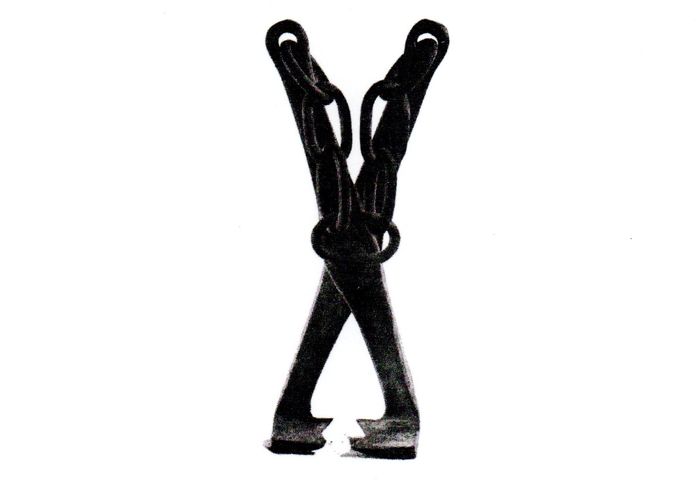

- Pfff c’était long, suis ben fatigué
- OK on peut faire un petite pause, asseyons nous
- Zzzzzzz Zzzzzz
- Hola la, je crois que je me suis endormi : j’ai parlé à une trompette tandis que toi tu blablatais avec un Atlas. Normal !
- Et y nous disaient quoi dans ton rêve ?
- Ils nous disaient qu’on ne joue pas au ballon là où il y a des outils et donc pas sur le domaine viticole de la Haye.
- Il faut donc continuer à chercher…
